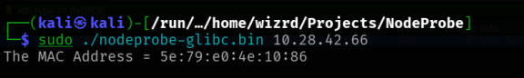
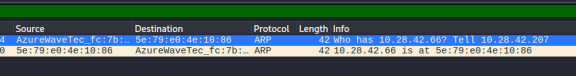
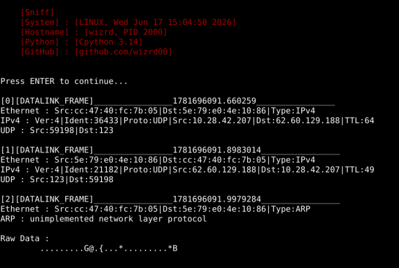
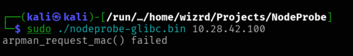
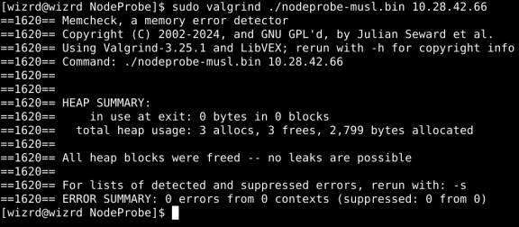
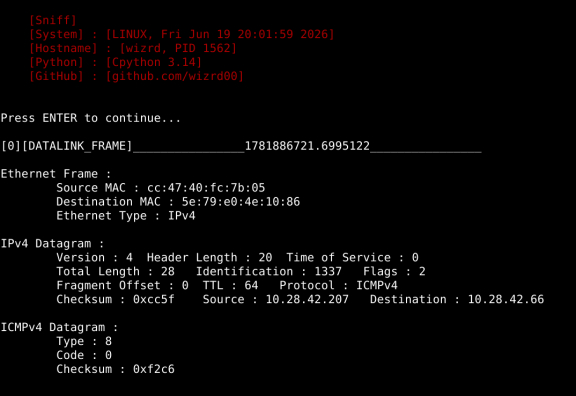
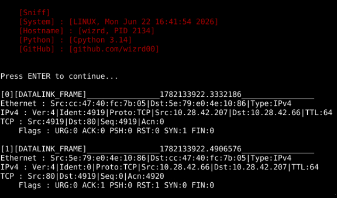
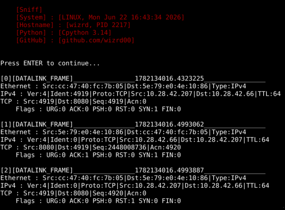
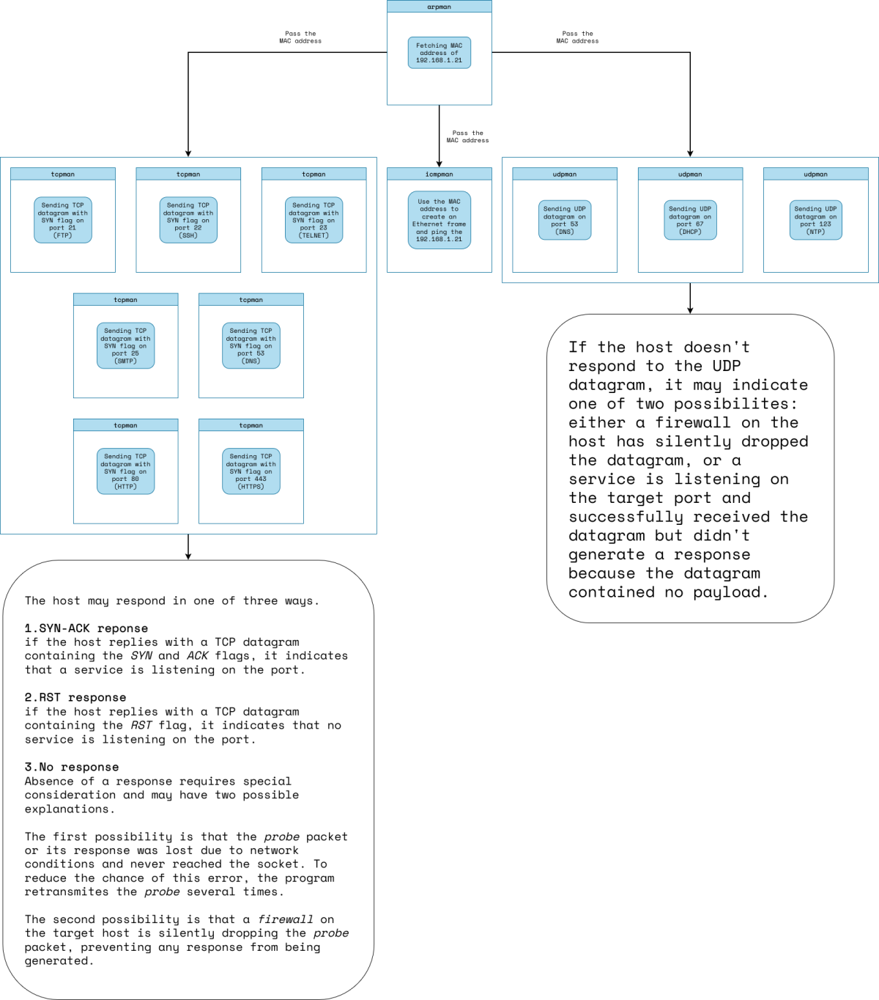

NodeProbe Project Link to heading
NodeProbe is a multi-threaded network prober and host discovery which uses various Network Protocols to reconnaissance and gathering information about hosts in Local Networks.
Logs Link to heading
Steps Link to heading
Steps to writing this program dispite of details :
-
First step :
-
using ARP Req to discovery hosts and specifiy that an IP is alive or not. To receive and send ARP, I need to create dgram socket with address family AF_PACKET but in protocol argument I have two options. First, set the protocol arg of
socket()tohtons(ETH_P_ARP)and start receiving and sending on socket. Second, set the protocol arg to zero and set thesll_protocolmember ofstruct sockaddr_lltohtons(ETH_P_ARP). -
Second step :
-
pinging the host to specifiying two things : 1.is host pingable or not. 2.average time to reach the host in ms. To receive and send ICMP, I need to create dgram socket with address family AF_INET and set the protocol argument of
socket()to IPPROTO_ICMP. -
Third step :
-
checking TCP-based services such as SSH, FTP, HTTP etc.
-
Fourth step :
-
checking UDP-based services such as DNS, *DHCP, NTP etc.
How do I fake-test my modules? Link to heading
As you know, testing modules is an unavoidable part of programming and according to size of the project, there is two option in C :
- assert.h standard header and
assert()macro; In small Projects it works fine but it has an annoying problem, it doesn’t give u a location to where the problem occurs - third-party test libraries like Unity
I’m used to using Unity to test my modules. It’s easy to link, It’s minimal, It’s fast(I think it probably tests units in saperate threads).
But in Network Projects, testing units is not that easy. because there is IO Band functions such as recv(), send(), recvfrom(), etc. So units can’t be dependent on these functions and to reach that goal you have to write fake version of them and link them to ur software(linkers use your functions instead of libc version of them by default so there is no need to manipulate linker).
My method is to make a directory called fake inside of your test dir and use sed to replace your #include <sys/socket.h> to #include "fake_socket.h" or any header you want and save it in the fake dir. Also I write a fake_socket.h and fake_socket.c and use -Ifake make my compiler to use fake_socket.h.
To making all I have said sense, here is and example of this method :
test_arpman/
├── Makefile
├── build
├── fake
│ ├── fake_arpman.c
│ ├── fake_arpman.h
│ ├── fake_poll.c
│ ├── fake_poll.h
│ ├── fake_socket.c
│ └── fake_socket.h
└── test.c
and here is content of the Makefile :
CC = pcc
BUILD_DIR := build
FAKE_DIR := fake
INCLUDE_DIR := ../../include/
LIB_DIR := ../../library
UNITY_DIR := ../libunity
ifeq ($(CC), pcc)
CFLAGS := -std=c99 -O3 -Wc,-Werror=implicit-function-declaration,-Werror=missing-prototypes,-Werror=pointer-sign,-Werror=sign-compare,-Werror=strict-prototypes,-Werror=shadow -pthread
UNITY_LIB_FLAGS := -Wl,--library-path=$(LIB_DIR),--library=unity-musl,-rpath=$(LIB_DIR)
else ifeq ($(CC), gcc)
SPECIAL_OPTS := -DARPHRD_ETHER=1
CFLAGS := -std=gnu99 -O3 -Wall -Wextra -Wpedantic -Wstrict-aliasing -Wcast-align -Wconversion -Wsign-conversion -Wshadow -Wno-switch -pthread $(SPECIAL_OPTS)
UNITY_LIB_FLAGS := -L$(LIB_DIR) -lunity-glibc -Wl,-rpath=$(LIB_DIR)
else
$(error unsupported compiler : $(CC))
endif
TEST_SRC := test.c
TEST_OBJ := $(BUILD_DIR)/test.o
REAL_ARPMAN_SRC := ../../source/arpman.c
FAKE_ARPMAN_SRC := fake/fake_arpman.c
REAL_ARPMAN_HDR := ../../include/arpman.h
FAKE_ARPMAN_HDR := fake/fake_arpman.h
ARPMAN_OBJ := $(BUILD_DIR)/arpman.o
FAKE_SOCKET_SRC := fake/fake_socket.c
FAKE_SOCKET_OBJ := $(BUILD_DIR)/fake_socket.o
FAKE_POLL_SRC := fake/fake_poll.c
FAKE_POLL_OBJ := $(BUILD_DIR)/fake_poll.o
test.elf : $(ARPMAN_OBJ) $(FAKE_SOCKET_OBJ) $(FAKE_POLL_OBJ) $(TEST_OBJ)
@echo linking object files $^
$(CC) $(CFLAGS) -o $@ $^ $(UNITY_LIB_FLAGS)
$(TEST_OBJ) : $(TEST_SRC)
@echo compiling $^
$(CC) -c $(CFLAGS) -I$(FAKE_DIR) -I$(UNITY_DIR) -I$(INCLUDE_DIR) -o $@ $^
$(ARPMAN_OBJ) : $(FAKE_ARPMAN_SRC) $(FAKE_ARPMAN_HDR)
@echo compiling $<
** $(CC) -c $(CFLAGS) -I$(FAKE_DIR) -I$(INCLUDE_DIR) -o $@ $<**
$(FAKE_ARPMAN_SRC) : $(REAL_ARPMAN_SRC)
** @cp $< $@**
$(FAKE_ARPMAN_HDR) : $(REAL_ARPMAN_HDR)
** @cp $< $@**
** @sed -e "s/include <poll\.h>/include <fake_poll.h>/" -e "s/include <sys\/socket\.h>/include <fake_socket\.h>/" $< > $@**
$(FAKE_SOCKET_OBJ) : $(FAKE_SOCKET_SRC)
@echo compiling $<
$(CC) -c $(CFLAGS) -I$(FAKE_DIR) -I$(INCLUDE_DIR) -o $@ $<
$(FAKE_POLL_OBJ) : $(FAKE_POLL_SRC)
@echo compiling $<
$(CC) -c $(CFLAGS) -I$(FAKE_DIR) -I$(INCLUDE_DIR) -o $@ $<
memcheck : test.elf
@echo start checking test.elf for any memory bug
valgrind --tool=memcheck --leak-check=full --show-leak-kinds=all ./$^
clean :
rm -rf build/* test.elf
I don’t enjoy this process but it’s interesting.
Real Testing arpman Module Link to heading
After fake testing the arpman module with fake recvfrom() and poll() functions, it’s real testing turn.
In Network Projects real testing is neccessary and since I write my modules as independent as possible, the arpman can be use to translate an IP address to MAC address independently from the main Project and it’s a standalone piece of software.
First test was about getting the gateway’s MAC, there is the result :


And also sniffing on the HI6Toolkit

And now if I want to translate an IP which it’s not allocated to any host, the result is this :

The arpman_request_mac() returns TIMEOUT when nobody response to its request.
This approach makes my program to be capable of detecting which host is alive which is not.
A Problem Link to heading
After resolving MAC address using arpman, the program starts pinging the alive hosts(hosts that answered to ARP Request). But the problem is if I implement the icmpman module(which the program will use to ping) with socket(AF_INET, SOCK_RAW, IPPROTO_ICMP), maybe the kernel didn’t process the ARP reply for some reason and it tries to get target’s MAC with ARP as same as my progam does in its first step with arpman; It means using ARP twice just for one host. My program knows the target’s MAC but the kernel may not know. So in this case I rather to use socket(AF_PACKET, SOCK_RAW, htons(ETH_P_IP)) instead to avoid unnecessary ARP REQ in kernel space.
Of course it’ll make me to create even ethernet header in user space but it’s a clever method in this situation.
Real Testing icmpman Module Link to heading
Testing result of icmpman module :


Real Testing tcpman Module Link to heading
In the first test the tcpman sends SYN segment to gateway(which is my phone) on port 80. There is no service on port 80 in my phone, so there is the result :

In the second test the tcpman sends SYN segment on port 8080. A http proxy is listening on this port in my phone, so there is the result :

So the tcpman works great :)
What now? Link to heading
At this time(after implementing main modules : arpman, icmpman, tcpman, udpman) I don’t know what should I do. should I implement argman or the nodeprobe or any other module. I think reviewing process of the nodeprobe to gather info from hosts should help. So what nodeprobe does?
1.Discovering alive hosts in a Local Network with arpman module Link to heading
But how this process should actually work? should discover all hosts first and then go to next step or should discover one host and go to next step and repeat this for each IP? or even discover hosts in fixed-size like 8 hosts and go to next step in saperate threads? I think the last option makes more sense.
2.Pinging the hosts that discovered from previous step using icmpman module Link to heading
3.Detemine what TCP service exists in the host Link to heading
4.Determine what UDP service exists in the host Link to heading
So the process should something like this:

I think best way to use these modules is to use them as a shared library and let interfaces decide. So after modifying logman module and add a mutex to its main context struct, and making it Thread-Safe I’ve decided to develope my own Interface for NodeProbe and it’s been called NodeProbe-GUI.